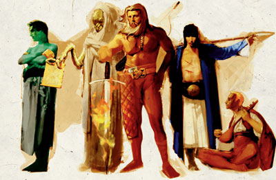

桂伦B风暴 Gwaeron Windstorm（北地游侠守护神）

（左三）
费伦神系 微弱神力
别称：追踪大师 Master of Tracking，永不迷途的追踪者 the Tracker Who Never Gose Astray
圣徽：爪印，中央有白星
居住界域：自然之殿 House of Nature
阵营：中立善良 NG
神职：追踪 tracking，北地的游侠 rangers of the North
信徒：德鲁依，游侠，巨魔猎人
牧师阵营：守序善良 LG，中立善良 NG，混乱善良 CG
神域：动物 Animal，善良 Good，知识 Knowledge，植物 Plant，旅行 Travel
喜好武器：烈焰之心 Flameheart（双手巨剑 greatsword）
桂伦B风暴既沉默又遁世，k是北地（the North）游侠们的守护神，其形象是一位高大健壮、打着赤膊、满头飘逸白发的人类男子，留着一把又长又白的美髯。秉性沉默的追迹大师耐性极佳，总是以身作则（而非使用空洞的言词）去教导自己的追随者。一旦k发怒，其敌人将会见识到最恐怖骇人的事物。众所皆知，k对巨魔（trolls）有着无比的憎恨，时 常在艾弗荒原（Evermoor）中搜捕追猎这些怪物。虽然桂伦B风暴在北地的游侠中广受敬重，但其信徒多半都是期许自己能以追迹大师为榜样与仿效对象－而非真正地崇拜k。
桂伦B风暴的信徒并未有何组织化的教会，且与梅莉凯（Mielikki）的信仰之间也没有显著的区别；除此之外，在北 地以外的地区也少有游侠知道k的名号。就事实而言，大多数森林女王的圣坛中也都会有一个追迹大师的小型圣坛（或祭坛）。桂伦的追随者们（被称为「寂静之道的追迹者」，Stalkers of the Silent Path）在北地四处活动，努力地控制巨魔、兽人、以及其它人型生物的数量，并尽一切力量打击马拉（Malar）的信仰。
信奉桂伦B风暴 的牧师与德鲁依在黄昏时祈祷以获得神术，此时许多荒野中的走兽正自离开巢穴出外觅食（或狩猎）。桂伦的信仰没有专属的圣日，其信徒亦依循梅莉凯的信仰的圣日举行庆典。每当「追猎」成功之后，信奉k的信徒们都被要求必须在现场以六枚右脚足迹印成花型－脚跟在内而并拢、脚尖则一致朝外。几乎所有信奉桂伦B风暴 的牧师与德鲁依都会兼职成为游侠。
历史/与众神的关系 History/Relationship：
在许多世纪之前，桂 伦原本是一位凡人，在北地中四处漫游。传说他最后在三野猪镇（Tribosr）西边的一棵树下死去（被称为「桂伦之眠」，Gwaeron's Slumber）。追迹大师与芮（Lurue）及希昂莉亚（Shiallia）一同服侍着梅莉凯，k负责教导森林女王的游侠们如何去辨认各种森林中的讯 息与记号，并以此间接地为西凡那斯（Silvanus）服务。k已与众多精灵神系、侏儒神系、半身人神系中，那些神职与k自己、梅莉凯、或者西凡那斯相近的神o结为盟友。k痛恨并反抗马拉的一切作为。由于k的信仰与梅莉凯十分相似，因此有些不了解的外人会将k当作是森林女王信仰的某一面向；此外，由于自己 的信徒数量不多，因而如果不慎k反而会成为马拉的猎物。
教义 Dogma：
所有智性的生物皆可与自然和谐共存，无须互相 毁灭。对荒野无须感到畏惧，应当投入它的怀抱－荒野自然之道并非邪恶之道。汝当保护「一体至衡」（the Balance），并学习生命的诸多面向－但亦不可忘却大自然那积极成长的本质。汝当保护林中生物、和为每一棵树木、在树木枯死（或被砍倒）之处重新栽种、并设法回复被伐木者与用火过度者所扰乱的自然和谐。汝当视自己亦为森林的一份子，并教导其它人也这么做。严惩那些为了娱乐或残忍狩猎自然荒野生物的恶 人。
--
资料来源：费伦大陆信仰与神系《Faiths & Pantheons》
译者：一凡